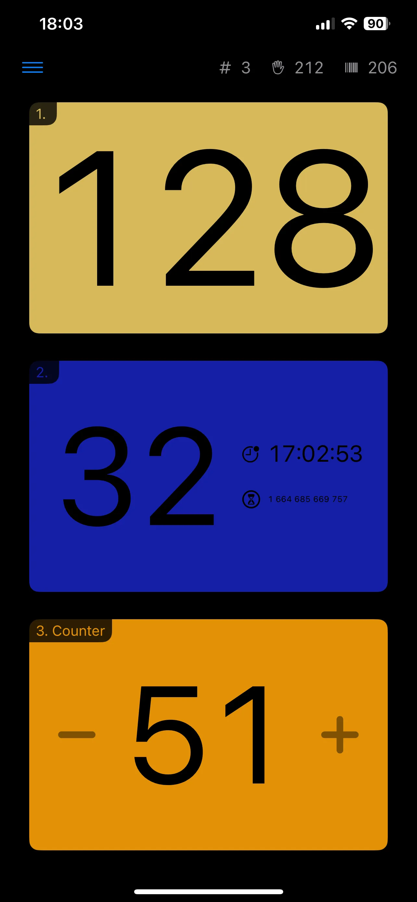
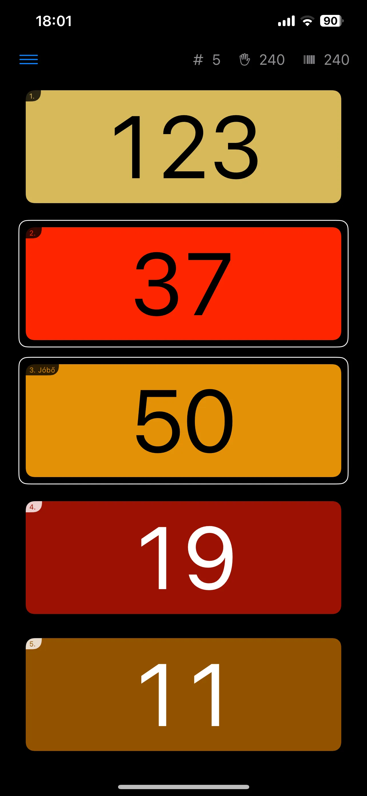
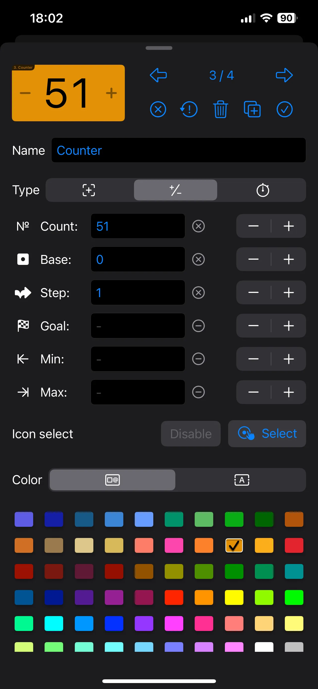
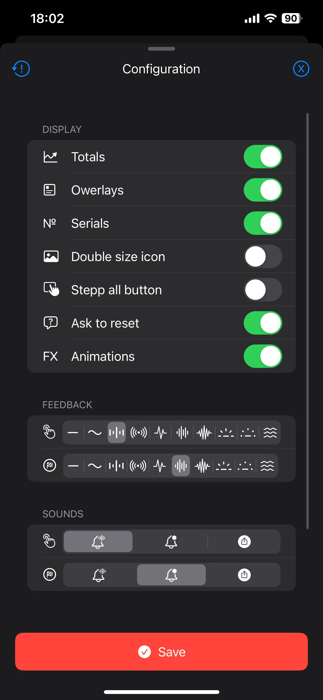

Keep count. Keep it simple. · In development
Big buttons.
Clear numbers.
When you can no longer remember what you counted, or how many, Counting keeps track. Simple counters, flexible cards and one less thing to hold in your head.

One thing. Or several at once.
Stop keeping everything in your head.
Counting is useful precisely because it keeps things simple. Give each item its own card, choose how it should count, and keep the numbers where you can see them.
Tracking several things together? You can increase every counter at once. Configure the cards for your task, then focus on what you are counting.

Three ways to keep track
The right counter for the job.
Sometimes you only need one more. Sometimes you need to take one away. And sometimes the time between taps matters just as much as the total.
-
Tap. Add one. Done.
The basic counter gives you a big button and a clearly visible number. Press it, and the count goes up by one. A straightforward tool without a complicated interface getting in the way.
-
Count up. Count down.
Add or subtract, including below zero when you need negative values. Set limits or target values, and adjust the counter to suit what you are keeping track of.
-
Keep track of the time, too.
The timed card records when you last tapped and shows how much time has passed since. Keep both the count and the timing in view.
Your cards. Your way.
Make every counter your own.
Mix the card types and configure each one individually. Choose its color and icon, add a label, or use a background image to make the card instantly recognizable.
Adjust starting values, steps, goals and limits. Then choose how much information to display and how the app should respond to a tap. Keep the setup simple, or fine-tune it for your task.


Looking ahead
More ways to count.
Counting is currently in development. The following ideas are planned for the future; they are not available features yet.
- Voice control
- A planned way to operate counters using your voice.
- Image-based triggers
- Planned image-based triggering for counters.
In development · Release details will follow.